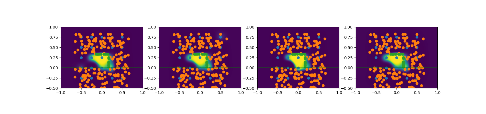

2024 July 19
I had four action items from last time:
This write-up is organized into the following sections:
Experiment Ideas: These are some ideas for what potential experiments we could run to try to validate our method:
There are also other things that might fit into the pitch:
I implemented the changes recommended in the action items, which are detailed in subsequent subsections. I also spent a little bit of time trying to find better hyperparameters for simulation based on some hacky heuristics I through together, which would explain why the simulations may be exibhiting different behavior than previously.
I updated my fake 2D data, now it randomly generates 2D data that looks roughly like this:
Where blue are negative points and orange are positive (surface) points. There are now more points involved.
I implemented the Laplacian kernel (it was a pretty small change), it tends to make surfaces a little more noisy. Here is an example of reconstructions after running SVGD with a Hilbert Map loss:

I then tried to optimize for physics and the ln posterior actually got worse after the optimization; this may be symptomatic of the gradient problem discussed in Exploring Gradients. Here is the before/after physics gifs
Before:
After:
The reconstructions are pretty similar because I used a low learning rate, but this was to demonstrate that even with a low learning rate, the ln posterior doesn’t improve (the numbers below the images are the ln posterior values for the 4 different particles).
The hyperparameters for those images:
| Hyperparam | Value |
|---|---|
| kernel | Laplacian |
| optimizer | Adam |
| num opt steps | 300 |
| num physics steps | 300 |
Increasing the learning rate along with some other params can cause total failure:
Even though I think it might not be as necessary because there is less rolling with my new physics parameter, I updated the loss I was using to include the velocity and acceleration at the final state. The following is an example of that. This is the reconstruction going into the physics based optimization:
Here are the before/after of physics:
Before:
After:
Again, stuff doesn’t go down like I’d hope, which brings me to try Exploring Gradients and Thinking About a Loss.
Here were the hyperparameters for the above gifs:
| Hyperparam | Value |
|---|---|
| kernel | Gaussian |
| optimizer | Adam |
| num opt steps | 300 |
| num physics steps | 300 |
I noticed some papers pointing to problems with gradients from differentiable simulation with contact [8]–[10]. I also observed that optimization I currently had using such gradients was not well-behaved and would sometimes increase loss even at low learning rates. Thus, I decided to investigate if there could be a problem here.
The following math comes from [8]. Consider a dynamics function conditioned on parameters w that takes the following form:
s_{t+1} = f(s_t; w)
Then consider we have some loss function with respect to the system:
L({w}) = \frac{1}{T}\sum_{t=0}^T l_t (s_t; w)
Following [8], we can express the following derivative (used in gradient descent of L):
\frac{dL}{d w} = \frac{1}{T} \sum_{t=0}^T \left[\frac{\partial l_t}{\partial w} + \sum_{k=1}^{t} \frac{\partial l_t}{\partial s_t} \left( \prod_{i=k}^t \frac{\partial s_i}{\partial s_{i-1}} \right) \frac{\partial s_{k}}{\partial w}\right]
Thus, the convergence and whether or not gradients explode is dependent on the eigenvalues of \frac{\partial s_i}{\partial s_{i-1}}, which is the Jacobian of f above. Thus our system can be poorly behaved and chaotic if these eigenvalues are high magnitude.
Simple Square: First I analyze the gradients of the dynamics of the following square (slow-mo gif)
As you can see, the square is not far from the ground and is at a slight angle. It simply falls a little and becomes flat. The physics are a spring-damper setup. Here is a graph of the max/min eigenvalues of the Jacobian d s_t / d s_0:
As shown in the graphs, once contact was made at about time step 50, the max/min eigenvalues start to do not-so-good things.
Reconstruction Example: Next, I looked at the reconstruction stuff we have been doing; Here is what the physics look like for that:

Nothing to write home about: it just kind of rolls over. However, when you analyze the gradients, you see gradient explosion. This first graph again shows the min/max eigenvalues of the Jacobian d s_t / d s_0 (Note: this is jacobian over t steps):
It should be noted that these images are on the scale of 10^7 and 10^6 respectively. Also note that the min eigenvalue takes high magnitude negative values; it is exploding!
Next is a graph of the norm (frobenius I think) of the Jacobian \frac{d s_t}{d w} (the full derivate not partial). It clearly is exploding and clipped, reaching norms above 10^{12}:
As per this section, it seems we have an exploding gradient problem. There are a few things we can do about this. Here are some ideas:
Also, it might be worth exploring how noisy local gradients are (perhaps smoothing as hinted in [8] and explored in [11] may help alleviate problems)
One idea I had for minimizing gradients, was to have a little bit of the loss function at each step of the way, with an exponentially decreasing weight assigned to it. It would be the discrete analogue to something like (for decay factor 0 < \alpha < 1):
L_{\text{stable}} = \int_0^T \alpha^{t} \| s_t - s_0 \|^2 dt
And if we descretize things would look like:
L_{\text{stable}} = \sum_{t=1}^T \alpha^t \|s_t - s_0 \|^2 dt
Where dt is the time step and \|\cdot\| represents the geodesic norm in SE(3) or whatever space we are in. Penalizing the whole trajectory like this would allow gradients from later steps subject to explosion to be counter-balanced in a way by the decaying factor.
Basically, the main problems I am facing are:
Then, my questions are the following:
[1] W. Agnew, C. Xie, A. Walsman, O. Murad, Y. Wang, P. Domingos, and S. Srinivasa, “Amodal 3d reconstruction for robotic manipulation via stability and connectivity,” in Conference on robot learning, 2021, pp. 1498–1508.
[2] C. Song and A. Boularias, “Inferring 3d shapes of unknown rigid objects in clutter through inverse physics reasoning,” IEEE Robotics and Automation Letters, vol. 4, no. 2, pp. 201–208, 2018.
[3] E. Remelli, A. Lukoianov, S. Richter, B. Guillard, T. Bagautdinov, P. Baque, and P. Fua, “Meshsdf: Differentiable iso-surface extraction,” Advances in Neural Information Processing Systems, vol. 33, pp. 22468–22478, 2020.
[4] J. J. Park, P. Florence, J. Straub, R. Newcombe, and S. Lovegrove, “Deepsdf: Learning continuous signed distance functions for shape representation,” in Proceedings of the ieee/cvf conference on computer vision and pattern recognition, 2019, pp. 165–174.
[5] M. Van der Merwe, Q. Lu, B. Sundaralingam, M. Matak, and T. Hermans, “Learning continuous 3d reconstructions for geometrically aware grasping,” in 2020 ieee international conference on robotics and automation (icra), 2020, pp. 11516–11522.
[6] H. Wright, W. Zhi, M. Johnson-Roberson, and T. Hermans, “V-prism: Probabilistic mapping of unknown tabletop scenes,” arXiv preprint arXiv:2403.08106, 2024.
[7] X. Zhang, Z. Zhang, C. Zhang, J. Tenenbaum, B. Freeman, and J. Wu, “Learning to reconstruct shapes from unseen classes,” Advances in neural information processing systems, vol. 31, 2018.
[8] L. Metz, C. D. Freeman, S. S. Schoenholz, and T. Kachman, “Gradients are not all you need,” arXiv preprint arXiv:2111.05803, 2021.
[9] Y. D. Zhong, J. Han, B. Dey, and G. O. Brikis, “Improving gradient computation for differentiable physics simulation with contacts,” in Learning for dynamics and control conference, 2023, pp. 128–141.
[10] Y. D. Zhong, J. Han, and G. O. Brikis, “Differentiable physics simulations with contacts: Do they have correct gradients wrt position, velocity and control?” in ICML 2022 2nd ai for science workshop.
[11] T. Pang, H. T. Suh, L. Yang, and R. Tedrake, “Global planning for contact-rich manipulation via local smoothing of quasi-dynamic contact models,” IEEE Transactions on robotics, 2023.